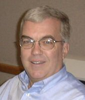
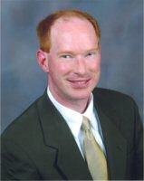

Keynote Speakers
Bill Woodworth, IBM

As Corporate Director of IBM Quality Software Engineering, Bill Woodworth has a three fold responsibility: 1) increase the IBM-wide focus on testing of all software products and solutions, 2) based upon the success achieved in #1 for testers, do the same for all IBM software developers, and 3) drive the continuing focus on improving the reliability/ availability of our integrated customer solutions. In this role, Bill was leading both the company wide 'Testers Community' and 'Developers Community'. In 2005, these were integrated into one unified 'Quality thru Software Engineering (QSE) Community', which under Bill's leadership, is teaming and facilitating the units across IBM into a "best of breed" standard of software engineering, so the units are achieving their business goals by applying better software engineering.
With 25 years of product development and test management experience, he has achieved proven and consistent successes through leading results-oriented and quality-focused processes in the software development business.
Bill's presentation is available here: "Testing Leadership: From 2nd Class Citizens to Best of Breed".
John Hatcliff, Kansas State University, USA

Dr. John Hatcliff is a Professor in the Computing and Information Sciences Department at Kansas State University (KSU) and leads the KSU Laboratory for Specification, Analysis, and Transformation of Software (SAnToS). SAnToS researchers have produced a number of techniques and tools that seek to enable effective construction of high-confidence software systems including the Cadena model-driven development and analysis environment, the Bogor extensible software model checking framework, the Indus Java slicing framework, and the Bandera Java model-checking framework.
SAnToS relies on extensive interaction with industrial partners including Boeing (Phantom Works, St. Louis), Lockheed Martin, and Rockwell-Collins to gain insight into particular foundational advances and tool capabilities that will be necessary to affect practice. Dr. Hatcliff and other SAnToS Researchers were members of the NASA Java Pathfinder Team that in 2003 received NASA's Turning Goals Into Reality (TGIR) Award -- one of fifteen awards given to NASA projects in 2003 that best demonstrated progress toward NASA's mission objectives. In May 2005, the SAnToS Cadena environment was used by Boeing engineers to develop the avionics software flown on the Scan Eagle Unmanned Air Vehicle (UAV) platform for the US Department of Defense Advanced Research Projects Agency (DARPA) Program Composition for Embedded Systems capstone demo at the US White Sands Missile Range.
John's presentation is available here: "Bogor: A Flexible Framework for Creating Software Model Checkers".